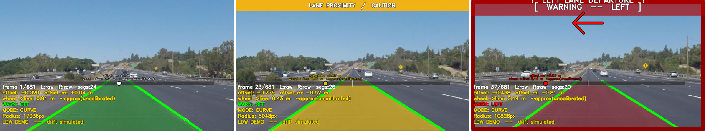

08
차선 이탈 경고 — 바퀴-차선 거리 모델
LDW Distance Model
차선중앙 vs 차량중심 →
정규화 오프셋
물리 환산: 차폭
1.8m
·차선폭
3.7m
가정 →
바퀴–차선 남은 거리(m)
CAUTION ≤ 0.45m
(노랑, 조기경보) ·
DANGER ≤ 0.15m
(빨강, 임박)
거리 히스테리시스로
깜빡임 방지
※ 미보정 근사 지표 — 정밀 측정 아님
9강 호모그래피
버드아이 뷰
병행

SAFE(녹) → CAUTION ≤0.45m(노랑) → DANGER ≤0.15m(빨강) 3-상태 경고